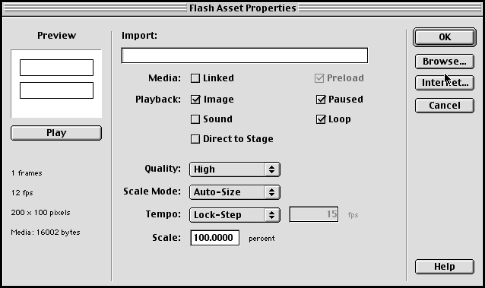

Flash Text in Directorby Eric Coker |
|
|
Version 7.0.2 of Macromedia Director brings many great new features, like faster playback, more sprite channels, and dot syntax. Unfortunately, in order to get these new features in, it seems that some of the older features of Director have been somewhat neglected. Aside from a couple of new additions, text in Director hasn't changed much in the past few iterations of Director. Since text is as important a content type as sound and graphics, it can be quite frustrating to use Director's limited text fields within the whiz-bang interface you just designed. Fortunately, Macromedia has provided an alternative. A new feature of Flash 4 is the ability to create text entry fields. Since Director 7.0.2 can import Flash 4 assets, you can now use these fields in Director. Though Flash asset performance is not much better than the built-in text options, there are some significant advantages to using it. FontsThe 7.0.2 Read Me file states, "On the Macintosh, a small percentage of postscript fonts either fail to compress or render incorrectly." Fortunately, Flash does not seem to share these problems. Every PostScript font that I have imported into Flash looks the same as it would in Illustrator or Photoshop. Because Flash treats text as vector art, your Flash sprites can be scaled in Director without worrying about font sizes. One downside to Flash text is that it looks blurry at small point sizes, due to the anti-aliasing of the Flash member. The anti-aliasing can be turned off, by selecting the Low Quality setting in the Cast Member Properties dialog box, but your text will probably be illegible as a result. Because font information is stored as part of the Flash asset, you only have to manage one cast member, instead of one field and one font member. In fact, you can set up one or multiple forms in a Flash movie and have it only take up a single cast member in Director. Extra FeaturesWith Director's Text and Field members, many simple functions require considerable Lingo scripting. This is not so with Flash. You can easily make password fields and limit the number of characters that can be typed into a field. However, Flash can be much more limited in terms of more advanced functionality. Take a look at Flash's Text Field Properties dialog for ideas on how you can use it for features that Director's text and field members don't provide. PerformanceFlash performance can be pretty slow in some cases. Here are a couple of tips to speed things up: The "Static" Property Flash members have a "static" property, which is not accessible via the Cast Member Properties dialog box. If you have a Flash member that doesn't require user input or animation, you can tell Director that the graphics of the member will not change. This makes a tremendous difference in the frame rate of movies that use Flash members. You can change the static property in a couple of different ways: Method 1: Open a Director movie with a Flash asset in it. Assuming that the Flash member was member 1, you would type in the message window: member(1).static = TRUE Save your movie. The property change will be saved with it. Method 2: If you have a Flash member that you want to change in some sections of your movie but not in others, you can attach the following behavior to the sprites that will not change: on beginSprite me sprite(the CurrentSpriteNum).static = TRUE end Cast Member Properties Dialog Box Settings Different Flash members will require different optimization settings within the Cast Member Properties dialog box. You should play around with these settings until you find the optimum settings for your asset. The settings that have made the biggest difference for me on my projects are the Direct to Stage and Tempo settings. If you have an asset that you know you won't be using special ink modes or layering effects with, go ahead and check the Direct to Stage box. The Tempo setting I usually use is Lock-Step. This forces Director to ignore the Flash asset's tempo and only update the Flash graphics when it updates the next Director frame. Since Director only has to redraw that portion of the screen once per frame instead of several times per frame, Flash doesn't impact Director's performance as much. Other settings I change from the defaults are Sound (OFF) and Paused (ON). Director Tempo Settings If you don't have animation that needs a specific frame rate, then crank up the frame rate in the sections of your movie that use vector art. This forces Director to update the stage more often, including your Flash members. This will result in faster response time when typing text into editable Flash fields. If you have Lingo based animation that executes on every exitFrame event, then your animation will be updated more often as well. Other Performance Boosts For some more tips on enhancing Flash performance in Director, see Macromedia Technote #14017. Create a Username/Password Dialog Boxwith (Almost) no Lingo! For a test project, let's make a simple username/password field using Director and Flash. Launch Flash 4 and create a new project. Go to the Modify: Movie menu to set up the initial properties of your project. For my example, I am sticking with a white background, so the Flash member can be set to Background Transparent ink within Director. Set the dimensions of your project just big enough to hold your fields. For my file, I used a width of 200 and height of 100. Once you have set up the properties, close the dialog box. Select the Text Tool and click and drag to create your username field in the Flash workspace. Use the settings on the Tool Palette to select your desired font properties for the field. Click the Text Field icon at the bottom of the Tool Palette. This makes all the cool features of Flash text fields available to you. To access these features, select Modify: Text Field (Note that the text fields in the included Flash movie userPass.fla have been turned into symbols. If you want to edit the Text Field proeprties you will need to edit the symbol and then access the Text Field properties). The first thing that you will want to do in the Text Field Properties dialog box is to give the field a variable name. This is the variable name that you will be accessing from Director. I am calling mine "vUser." I then set the Maximum Length setting to 15 characters. I only want the user to be able to type alphanumeric characters into the username field, so I trick Flash into limiting the user input by selecting the "Include only specified font outlines" option, and then checking only the "Uppercase", "Lowercase", and "Numbers" checkboxes. When the movie is run, the field will not respond to characters that it does not have an outline for. (Note: Password fields only display the asterisk character, so you can't trick Flash into not accepting that character as input). Also be aware that Flash is smart enough to borrow outlines from other fields, so if you want to use this trick, use a different font for fields that you want to limit the input for.) Your settings should look like those in the screen shot below: Once you have your text field properties set, click "OK" to exit the dialog box. Instead of starting from scratch with our password field, I Option(Mac)/Alt(Win)-Click-Shift-drag down to make a duplicate of the username field underneath the first field. If you are using the trick above to limit the text entered into the username field, don't forget to select a different font for the password field at this point. Once again, select Modify: Text Field to edit the new field. I set the variable name to "vPass." Check the "Password" box so that the field won't show the actual text being typed. Since the password field displays asterisks instead of the actual characters being typed, you need to add that outline to the set of included outlines. Select the "Characters" checkbox and type an asterisk ("*") into the Characters field. Click OK to accept the changes. Director can only access the variables we just created if they exist within a Flash symbol. With the password field still selected, select Insert: Convert to Symbol. Give your symbol any name and click OK. Select the username field and do the same thing. We're over halfway there! Save your work file in case you need to go back to it later, and then export your .SWF file from the File: Export Movie menu (the default export settings are fine). Launch Director 7.0.2 and import your .SWF file. If you want, you can use any of the tips listed in the Performance section to speed up your Flash movie (except the "static" property). Drag the Flash member to sprite channel 1, and set the sprite's ink to "Background Transparent". If you don't like the size of the asset, just grab a corner and drag to make it bigger.  Go ahead and double-click the Frame Script channel above the Flash sprite, and type in a behavior to have Director loop on the current frame: on exitFrame go to the frame end Select the Push Button tool on the Tool Palette. Click and drag on the stage to create a button to submit our username and password information. Click inside the button you just created and type SUBMIT. Select the new button member in the cast, and click the Cast Member Script button to edit the script of the button. To get our variable data from Flash, we will be using the "getVariable" function that Macromedia forgot to document in version 7.0.2. Type in the following script for the button: on mouseUp
vText = "Username:" && sprite(1).getVariable("vUser") & RETURN
vText = vText & "Password:" && sprite(1).getVariable("vPass")
alert vText
end
Note that you can also use the method "setVariable" to change text within a Flash asset. The syntax is: setVariable(sprite spriteNum, variableName, Value) Or in dot syntax: sprite(spriteNum).setVariable(variableName, Value) You're done! Open up the message window and play back your movie to view your handiwork. Your file should look something like the following:
Note that one downside to using Flash forms in Director is that they seem to ignore the Tab key when trying to switch from one field to another. Sample files for this project are available for download in Mac or PC format. Some Great Uses for Flash Fields in DirectorSo now that you know how to use Flash Fields in Director, here are some ways to take advantage of it:
Have fun with these tips - I hope Director 8 makes them obsolete! Eric Coker is a freelance Multimedia Producer in Durham, North Carolina. He uses Director and Flash to create Enhanced CDs, corporate presentations, and interactive Web doodads.
|